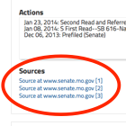
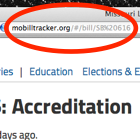

Frequently Asked Questions
We intend to keep the bill tracker updated with selected new bills, bill events and links to stories throughout the legislative session.
If you have questions that aren't covered here or suggestions for bills to track, please email Issues & Politics Editor Susan Hegger.
Why does the screen only show "Loading..."?
You may need to clear your browser's cache and/or cookies.
How do I view a bill's text?
Find the bill you want to view the text of and click "More detail." This will open a panel with the bill's sponsors, co-sponsors and recent actions taken by the legislature on the bill.
Scroll down past the bill's sponsors, co-sponsors and recent actions to "Sources." These links will take you to the Missouri government website pages about the bill.
How do I link to an individual bill?
You can link to an individual bill in the tracker to bookmark it, send it via email, Tweet it, etc. Just find the bill you'd like to link and look for the chainlink icon next to the bill's name.
Once you've clicked on the link, the URL linking to the bill you were viewing will be in your browser's location bar. It should look something like: mobilltracker.org/#/bill/SB%20616
Note: The "%20" in the URL encodes a space, so this link is for SB 616.
You can copy and paste this URL to share a direct link to this bill in the tracker.
What are those icons?
Each bill has five icons which are bright if they apply to the bill, or dim if they don't.

The Recent Actions icon shows which bills have been had some action — a vote, a committee hearing scheduled, etc. — within the last seven days.

This icon shows when a bill has passed the House.

This icon shows when a bill has passed the Senate.

This icon shows whether a bill is in conference committee.

This icon shows whether a bill has been signed into law.
Icons provided by The Noun Project. Congress by Martha Ormiston; Capital by Jonathan Keating; Paper by Tom Schott; Bank by Ilaria Baggio; Group by Alexandra Coscovelnita; Check mark by Spencer Cohen.
How does this work?
The tracker is a fork of a GitHub project by MinnPost, who used it to track the 2013 legislative session in Minnesota.
It pulls data from the Open States API, which gets data from the legislative Web sites of the states and makes it available in a standardized format. Open States is a project of the non-profit Sunlight Foundation.
The tracker is hosted on Github Pages.
Last updated Jan. 27, 2014.